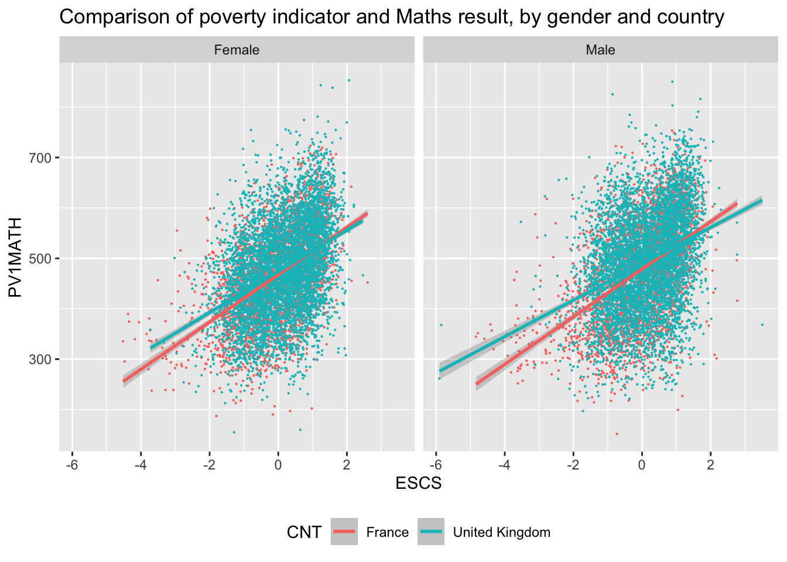
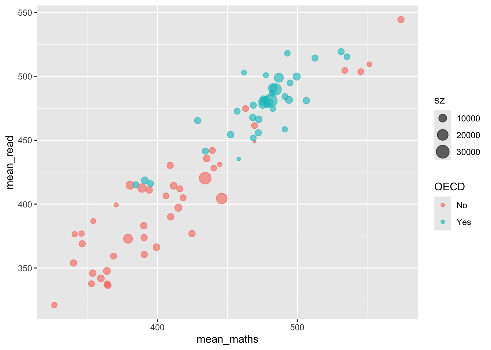
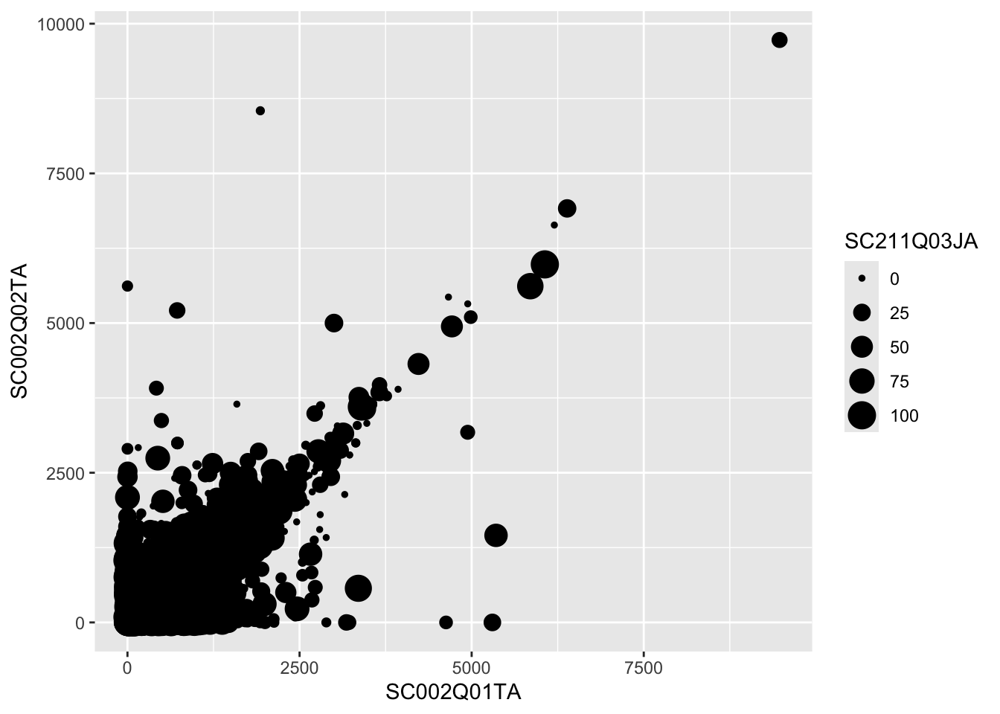
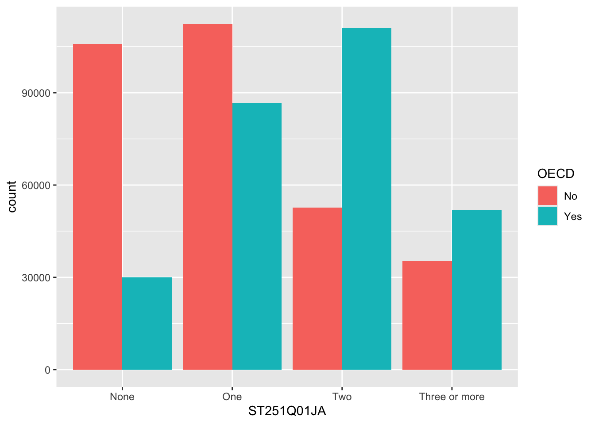
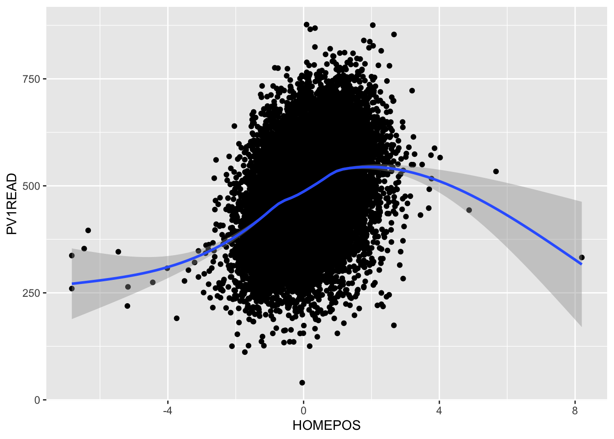

The tidyverse includes the incredibly powerful ggplot2 package. This package is pretty much the industry standard for making graphs for publication. ggplot2 is built on the grammar of graphics where you build graphs by specifying underlying attributes and layering geometric objects on top of each other. In the diagram below you can see how a graph is built from geometric objects (the things that are plotted such as points and bars) a scale, and plot annotations (e.g. a key, title etc). You can then apply faceting to the graph to automatically split one graph into multiple plots, allowing you to easily compare different groupings. Publications, such as the Financial Times, make daily use of ggplot2.
Adapted from A Layered Grammar of Graphics, Wickham, 2010
1 ggplot
The basic structure of ggplot code is to combine different graphing elements through the use of the + operator. To demonstrate this, let’s look at the relationship between a poverty indicator ESCS and the performance in Maths PV1MATH, by gender ST004D01T and country CNT:
library(tidyverse)# wrangle our datagraph_data <- PISA_2022 %>%filter(CNT %in%c("France", "United Kingdom"))# display a graph of the resultsggplot(data = graph_data, aes(x = ESCS, y = PV1MATH, colour = ST004D01T)) +geom_point(size=0.1) +geom_smooth(method ='lm') +facet_wrap(. ~ CNT) +ggtitle("Comparison of poverty indicator and Maths result, by gender and country") +theme(legend.position ="bottom")

Hopefully you can work out what lines 1-3 do from the previous chapter, let’s focus on the ggplot commands:
6-7 these lines set up the ggplot giving it the table object graph_data as its data input and setting up the aesthetics for the rest of the graph elements using columns from graph_data. The aes(<attribute>, <attribute>, ...) command allows us to specify aesthetic elements of the graph that will change dependent on the dataset we use. In the PISA_2022 data set, the variable ESCS refers to an index of economic status, and PV1Math, is the plausible value of the mathematics score. We set the x and y variables x=ESCS and y=PV1MATH , defining aes() inside ggplot() means we will pass down these values to subsequent geometric objects so we don’t have to define these x and y axis items again and again.
8 using the data and aes values defined on lines 6-7, geom_point uses the x and y values defined on line 19 to draw a point for each school in our dataset. There are lots of different parameters we could give geom_point e.g. specifying size and shape, but here we are content with using the defaults.
9 we add another geometric object on top of the points, this time we add a line of best fit geom_smooth, again this geometric object uses the values specified on lines 6-7, and we define the method as lm, to calculate a linear model line of best fit.
10 next we use facet_wrap(. ~ CNT) to create a graph for each group of CNT in the dataset, i.e. a graph for each country defined on line 3.
11 finally we customise the title of the graph, ggtitle, ready for display.
Important
Switching between the pipes and ggplot can get rather confusing. A very common mistake in using ggplot is to try and link together the geom_ elements with a pipe command %>% rather than the +.
2 geoms
There are about 40 different geometric objects in ggplot, allowing you to create almost any sort of graph. We will be exploring a few of them in detail, but if you want to explore others, please follow some of the links below:
geom_hline for adding static horizontal lines to a graph
geom_vline for adding static vertical lines to a graph
2.1 geom_point
Rather unsurprisingly, geom_point allows us to plot a layer of points using x and y coordinates. The below example shows how we can specify within the ggplot function data=school_plot_data. We then define the aesthetic attributes of the graph, passing the x x=NumberOfBoys and y y=NumberOfGirls values. Once these have been declared in the ggplot(...) function, their values are passed down to any subsequent geom_, in this case geom_point will use the data and x and y values that have been specified in ggplot(...)
# create a new dataframe of maths and reading scores by country and OECD statuscountry_plot_data <- PISA_2022 %>%group_by(OECD, CNT) %>%summarise(mean_maths =mean(PV1MATH),mean_read =mean(PV1READ),sz =n())# using this new dataframe, show the relationship between maths and reading score# using geom_pointsggplot(data=country_plot_data, aes(x=mean_maths, y=mean_read)) +geom_point(aes(size=sz, colour=OECD), alpha =0.6)

In line 2 above we pipe the large data.frame PISA_2022 to apply a number of functions.
Line 3 groups by OECD (a Yes or No indicating membership) and CNT (the name of the country).
Lines 4-5 calculate the mean mathematics and reading score, and create new variables (mean_maths, and mean_read) for their values.
In addition, in line 6, the variables sz is created which counts the number of responses per country through the n() command.
This whole pipe is then saved to the country_plot_data object, using the <- on line 2
This new dataframe is then passed to ggplot.
In line 10, we specify the data that should be plotted - the new dataframe country_plot_data we have created.
Line 11, then we pass the x and y variables, mean_maths, and mean_read, inside the aesthetic function. These values will be passed to any subsequent geom_
In line 12, we make a number of tweaks to the points: first setting the aesthetics - the size of the points is linked to the sz variable we created, the number of responses per country, and the colour is linked to OECD membership. Finally (and note this is outside the aes brackets, we set an alpha value which makes the point slightly transparent, which is more visually appealing where points overlap.
Important
Defining things inside aes mean that they will change with the dataset you use, if you define them outside aes then they will be constant values. For example
# plotting number of boys as x, number of girls as y and % disadvantaged as size,# all inside aes, so each point is a table rowggplot(data=PISA_2022_school) +geom_point(aes(x = SC002Q01TA,y = SC002Q02TA,size=SC211Q03JA))

# there is an error if we put size outside the aes, and set it a value from the # dataset, it can't find value!ggplot(data=PISA_2022_school) +geom_point(aes(x = SC002Q01TA,y = SC002Q02TA),size=SC211Q03JA)
Error in eval(expr, envir, enclos): object 'SC211Q03JA' not found
# but if we set the size explicitly, outside the aes, then all points will be that sizeggplot(data=PISA_2022_school) +geom_point(aes(x = SC002Q01TA,y = SC002Q02TA),size=3)
Using the PISA_2022 dataset, plot a graph for students from Norway to look at the relationship between Home Possessions (WLE)HOMEPOS and reading gradePV1READ. Colour each point with the gender ST004D01T of the student. Give the graph sensible x and y labels (e.g. xlab("label")).
Using the PISA_2022 dataset for each country CNT, create a graph to explore how the median of the sense of school belonging BELONG relates to the median of the disciplinary climate in mathematics DISCLIM, adjust the colour of each point to reflect the mean of students in each country ESCS.
HINT: You’ll need create a new data frame with summarised variables for median_belong, median_discipline and mean_wealth.
HINT: To make your colours stand out more, add + scale_color_gradientn(colours = rainbow(3)) to the end of your plot.
answer graph
# display a graph of the resultsggplot(data = graph_data, aes(x = median_belong, y = median_discipline)) +geom_point(aes(colour = mean_wealth)) +scale_color_gradientn(colours =rainbow(3))
2.2 geom_bar
The geom_bar function is versatile, allowing the creation of bar, multiple bar, stacked bar charts and histograms. This first example shows how we can use bar charts to represent the number of cars in a household ST251Q01JA:
2 gets the PISA_2022 dataset and removes all rows where ST251Q01JA is NA, storing this new dataset as plot_cars
4 passes the plot_cars to ggplot, as the dataset we are going to plot
5 specifies the x values to be the values stored in ST251Q01JA, i.e. we will have a bar for each response given in ST251Q01JA: None, One, Two, Three or more.
6 geom_bar tell ggplot to make bars, it uses the aesthetic from line 5, to plot the x axis, note we haven’t given it a y value, this is auto-calculated from the number of students in each x group.
We can choose to let ggplot split the results into different groups for us by setting a fill option, in this case on the OECD status of the country, i.e. do students in OECD countries have more cars than those not in OECD countries, to do this, we add fill=OECD to the aes on line 2 below:
The bars are now coloured with a key, but, annoyingly, the bars are on top of each other not easily allowing us to make direct comparisons. To compare different groups we need the bars to not be stacked, we want them next to each other, or in ggplot language, we want the bars to dodge each other, to do this we add the position=position_dodge() command to line 3 below:

2.2.1 Raising the bars yourself
ggplot can do a lot of the hard work when putting together bar charts, e.g. counting the number of students in each group, but there might also be times when you want to use pipes to calculate summary values that you then want plot. That is, you want to specify the heights of the bars yourself. To do this we will specify the y axis in the aes and use stat="indentity" to tell ggplot that’s what we’re doing. Take the example where you want to find the overall percentage of students for a range of countries getting over 500 in PV1SCIE:
ggplot(data=schools %>%filter(Phase =="Secondary"), aes(x=Region)) +# 1 no aes() around the x value # 2 missing close bracketsgeom_bar(aes(fill=Gender), position="fill") # 3 missing comma # 4 position="full" rather than fill
Create a bar chart showing the total number of students for each grouping of “How satisfied are you with each of the following: The way that you look” WB155Q02HA. Adjust this graph to see if there is a difference for this among females and males:
Plot bars for the number of Females and Males ST004D01T who answer each grouping for: “Confident can do in future: : Finding learning resources online on my own” ST355Q03JA. Make sure that the bars position_dodge() each other so we can compare the heights.
For France and the United Kingdom, plot the total number of students who gave each answer for ST324Q11JA “Agree/disagree: School has been a waste of time.”. Filter out all the NA values first !is.na(...)
[Extension] Explore other patterns in the school and student pisa datasets.
2.3 geom_text
Our bar charts look great, but finding the actual value of each bar can be a little clumsly if we have to get a ruler out and read off the y-axis. Better would be for us to have numbers listed at the top of each bar by adding a geom_text element:
line 6 starts the geom_text command, telling the geom to use the countstatistic from ggplot, this means it will be able to fetch the number of rows in each grouping.
line 7 as we want the label to change for each bar element, we put label=..count.. inside aes. The x location of the labels is inherited from line 4 and the y location will be calculated from the height of each bar
line 8 we want the labels to align to the bars, so we tell the geom_text to also position_dodge, passing a width=0.9 to the dodge function, so the labels line up above the columns,
finally, on line 9, we vertically adjust the labels vjust, so they sit on top of the columns.
Rather than adding the count, you might want to add the percentage that each bar represents, we can do this by changing the value given to label on line 5, below:
ggplot(data = plot_cars, aes(x=ST251Q01JA, fill=OECD)) +geom_bar(position=position_dodge()) +geom_text(stat='count', aes(label=100*(..count../sum(..count..)) %>%round(3), group = OECD), position =position_dodge(width=0.9),vjust=-0.5)
Additionally, when we make graphs we often want to label the dataset, for example if we were to plot all the countries and their PV1MATH and PV1READ scores, we would get:
Here we have used colour="black" outside the aes to define the colour for all the labels, and check_overlap = TRUE which removes any labels that are on top of each other. It’s still a little bit hard to understand, and maybe we want to focus on just a few of the labels for countries we are interested in. For example
# make a vector of countries you want to have labels forfocus_cnt <-c("United Kingdom", "France", "Argentina")# add a new column to the plot_data where these countries areplot_data <- plot_data %>%mutate(focus = CNT %in% focus_cnt)plot_data
# A tibble: 80 × 5
# Groups: OECD [2]
OECD CNT m_read m_maths focus
<fct> <fct> <dbl> <dbl> <lgl>
1 No Albania 359. 368. FALSE
2 No United Arab Emirates 420. 434. FALSE
3 No Argentina 413. 389. TRUE
4 No Bulgaria 405. 418. FALSE
5 No Brazil 415. 380. FALSE
6 No Brunei Darussalam 428. 440. FALSE
7 No Dominican Republic 354. 340. FALSE
8 No Georgia 374. 390. FALSE
9 No Guatemala 377. 346. FALSE
10 No Hong Kong (China) 504. 545. FALSE
# ℹ 70 more rows
Now we can adjust out geom_text to only show those countries that we want to focus on:
line 5 changes the data that is being passed to the geom_text, it no longer uses the data defined in line 2, but has a new dataset, that is filtered on focus == TRUE, i.e. only containing the countries that we want.
Note that the x and y mappings from line 3 are inherited by line 6, it’s only the data that we have redefined
Tip
geom_text is great, but you might find that ggrepel package useful as it’ll add lines connecting the text the data points. Using the plot_data from above:
Faceting allows you to easily create multiple graphs from one dataset and one ggplot definition by splitting the data on different factors, by defining:
facet_grid(<column_to_split> ~ .)
or
facet_grid(. ~ <column_to_split>)
Looking at the PISA_2022 dataset, we can plot the HOMEPOS and reading test outcome PV1READ variables against each other:
# create a subset of the data for plottingplot_data <- PISA_2022 %>%select(OECD, CNT, HOMEPOS, PV1READ) %>%filter(CNT %in%c("Germany", "Russian Federation", "United Kingdom"))ggplot(data=plot_data, aes(x=HOMEPOS, y=PV1READ)) +geom_point() +geom_smooth() +theme(legend.position ="bottom")

But it isn’t clear how this graph varies between countries. We could try plotting separate graphs for each country, but there is a faster way. Using:
+ facet_grid(CNT ~ .)
ggplot will automatically create graphs for subsets of plot_data, split on each different country in CNT
If the column you want to split on it on the left hand side of facet_grid(CNT ~ .), then the graphs will be piled on top of each other, if it’s on the right hand side facet_grid(. ~ CNT), then they’ll be side by side.
Take a subset of the overall dataset, by filtering on a few countries, take another one of your plots and use facet_grid(CNT ~ .) to explore the graphs for different countries.
3.1 Exporting plots
ggplot can export data in a variety of formats suitable for printing, publication and the web. Once you have created a graph and stored it in an object my_graph <- ggplot(..., the command to save the graph to your hard drive is:
If you want to change the output format, just change the extension of the file you are saving:
“poverty_size.pdf” perfect for publication and printing, potentially large file size
“poverty_size.svg” the same as pdf, also suitable for putting on webpages
“poverty_size.png” smaller file size, suitable for websites and presentations
“poverty_size.jpg” similar output to png
4 Additional support on graphing
4.1 Using R to do descriptive statistics and plot graphs
You can find the code used in the video below:
Show the code
# Introduction to plotting graphs## Download data from /Users/k1765032/Library/CloudStorage/GoogleDrive-richardandrewbrock@gmail.com/.shortcut-targets-by-id/1c3CkaEBOICzepArDfjQUP34W2BYhFjM4/PISR/Data/PISA/subset/Students_2022_RBDP_none_levels.rds# You want the file: Students_2022_RBDP_none_levels.rds# and place in your own file system# change loc to load the data directly. Loading into R might take a few minuteslibrary(tidyverse)loc <-"/Users/k1765032/Library/CloudStorage/GoogleDrive-richardandrewbrock@gmail.com/.shortcut-targets-by-id/1c3CkaEBOICzepArDfjQUP34W2BYhFjM4/PISR/Data/PISA/subset/Students_2022_RBDP_none_levels.rds"PISA_2022 <-read_rds(loc)# Calculating means of groups# The PISA_2022 dataframe is piped to a new dataframe MeanPISA# The data are grouped by the country variable (CNT)# The countries of interest are chosen (UK, France, Germany and the US)# The summarise function is used to output the mean and standard deviation score for each country# on the Science Plausible Value (PV1SCIE) and NAs are ignored na.rm=TRUEMeanPISA <- PISA_2022 %>%group_by(CNT) %>%filter(CNT=="United Kingdom"| CNT=="France"| CNT=="Germany"| CNT=="United States") %>%summarise(mean_sci =mean(PV1SCIE, na.rm=TRUE), sd_sci=sd(PV1SCIE, na.rm=TRUE)) print(MeanPISA)# To plot data we can use the ggplot function. # We will start by plotting a column graph use geom_col# We specify the data set for ggplot to use (MeanPisa) and then # define the x and y variables:# ggplot(MeanPISA,# aes(x=CNT, y=mean_sci))# geom_col() (Note the plus is on the line before) plots the graph and the fill colour is set to red# The next three lines set the formatting of the axis text and add x and y axis labelsggplot(MeanPISA,aes(x=CNT, y=mean_sci))+geom_col(fill="red") +theme(axis.text.x =element_text(angle =90, hjust=0.95, vjust=0.2, size=10)) +xlab("Country") +ylab("Science Score")# For plotting a scatter plot or PISA reading scores against science scores#, first we make a managable data set# I will filter the data set to include only the UK data# and remove any NAsUKData <- PISA_2022 %>%filter(CNT=="United Kingdom") %>%drop_na(PV1SCIE)# This time I will use ggplot to plot a scatter graph# I feed UKDATA to ggplot, specify the x (PISA Reading score)# And y (PISA science score). This time, I have linked the colour# to a variable (ST004D01T) which is the gender value, giving# plot points of different colours for boys and girls# To produce a scatter plot, I use geom_point to plot points,# Giving the size of point and the transparency (alpha=0.5) -# some transparency of points is helpful when plots become dense# The x and y lables are added# Finally, a line is plotted - geom_smooth(method='lm')# sets the line to a linear ('lm') lineggplot(UKData,aes(x=PV1READ, y=PV1SCIE, colour=ST004D01T)) +geom_point(size=0.1, alpha=0.5) +ylab("Science Score") +xlab("Reading Score") +geom_smooth(method='lm')# Where R becomes very powerful is being able to produce multiple charts rapidly# In the code below, I plot reading against science scores as above, but this time# Use the entire data set - for the whole world!# All the steps are the same, except, I use the facet_wrap, a way to create multiple# graph panels - the instruction creates a set of graphs for each country WorldData <- PISA_2022 %>%drop_na(PV1SCIE)ggplot(WorldData,aes(x=PV1READ, y=PV1SCIE, colour=ST004D01T)) +geom_point(size=0.1, alpha=0.5) +ylab("Science Score") +xlab("Reading Score") +geom_smooth(method='lm') +facet_wrap(CNT~.)